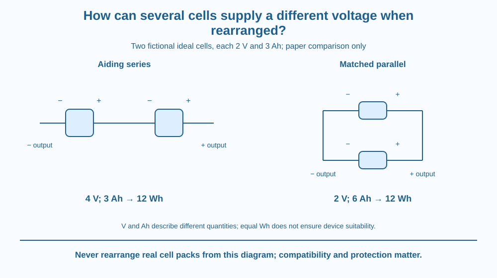

Compare ideal series and parallel arrangements of identical cells. Predict output voltage, charge capacity and stored-energy accounting using an explicitly fictional example. Use paper diagrams only; do not build, connect, open or charge real cell packs.
Two identical cells can represent the same total stored energy while offering different output voltages depending on their connection pattern. More cells does not mean that every electrical rating increases in exactly the same way.
A series arrangement places voltage rises one after another along a path. A matched parallel arrangement places branches between the same two terminals. These geometries impose different relationships.
The question concerns sources, not which household appliances belong on separate branches. Understanding the source arrangement helps distinguish voltage, current, capacity and energy instead of treating them as synonyms for battery strength.
A cell supplies a potential difference between its terminals through its chemical processes. In the ideal model here, each identical cell has a stated voltage and a stated charge capacity. Real operating voltage and capacity vary with conditions, but we temporarily hold them fixed for comparison.
In an aiding series connection, the positive terminal of one cell joins the negative terminal of the next. Traversing the source chain adds the individual voltage rises. Two identical model cells of voltage V therefore provide 2V across the outer terminals.
The same charge passes through each element of a simple series path. For matched cells, the pack's ampere-hour rating does not double merely because there are two cells in series. A weak or mismatched cell can limit an actual pack, another reason the ideal assumptions must be explicit.
In a matched parallel model, corresponding positive terminals share one node and corresponding negative terminals another. Both branches span the same terminal potential difference. The ideal pack voltage stays V, while the combined available charge capacity can be the sum of the matched branches.
Ampere-hour, written Ah, measures charge capacity. It is not a voltage and not an instantaneous current. One ampere-hour corresponds to one ampere maintained for one hour in the ideal accounting sense, equal to 3,600 coulombs of charge.
For an invented example, give each ideal cell a constant 2 V and 3 Ah. Two aiding cells in series give 4 V and 3 Ah. Two matched cells in parallel give 2 V and 6 Ah. These are fictional model ratings, not recommended real cells or a wiring instruction.
Stored-energy accounting in this fixed-voltage model uses watt-hours ≈ volts × ampere-hours. The series arrangement gives 4 × 3 = 12 Wh; the parallel arrangement gives 2 × 6 = 12 Wh. Rearrangement changes how the source is presented, not the total ideal energy supplied by the same two cells.
A real device has voltage limits and power requirements. Equal nominal energy does not make the two packs interchangeable. Actual runtime also depends on load, conversion losses, discharge conditions and protection, so a simple capacity ratio cannot guarantee a runtime for an unspecified gadget.
Real cells can be unsafe when mismatched, reversed, shorted or improperly charged. Even apparent voltage matching is not a complete compatibility test. All connection language here describes an ideal paper model; it is not permission to rearrange batteries from toys, power banks or discarded equipment.
Draw a route through two aiding voltage rises for series. Mark the outer terminals and write the sum of rises beside them. Then trace one conceptual charge marker through both cells.
For parallel, draw two branches between a common upper node and a common lower node. Mark the same voltage difference across each branch. Separate conceptual charge supplies can contribute to the shared output while the terminal difference stays the same.
Finally, make a table with columns for V, Ah and Wh. Keeping those units separate exposes a common mistake: adding every number in sight regardless of which connection or physical quantity the number describes.
The SVG compares two ideal source arrangements with clearly marked terminal polarities. The series model has two voltage rises in sequence; the parallel model shares two terminal nodes.
Below each, the fictional 2 V, 3 Ah cell ratings lead to the appropriate pack ratings. A common energy line shows 12 Wh for both arrangements under the fixed-voltage assumptions.
The drawing includes no wire sizes, charger design or construction steps. It is a comparison of source topology and accounting, with a paper-model caption rather than an invitation to connect actual cells.

Battery labels on Indian consumer products often use volts, milliampere-hours or watt-hours. These quantities answer different questions. Comparing only a large capacity number while ignoring voltage can make an energy comparison misleading.
Manufacturers design packs with compatible cells and protective systems appropriate to the device. A visible arrangement in a diagram does not show all those requirements. Students should leave actual packs sealed and use printed example ratings for arithmetic.
This also explains why replacing a device's source is not a matter of choosing the highest voltage available. Suitability includes the required voltage range and safe design, not just the largest number on a label.
Use paper and a calculator if desired. Do not use real cells or wires.
Ask a partner to identify why the series capacity is not 6 Ah in this comparison. Keep polarity marks readable. The aim is source accounting, not a practical build or a guarantee of device runtime.
Why can two packs have equal model energy yet fail to serve the same device? Separate energy available from voltage required at the terminals.
Now suppose someone says parallel always doubles current. What information is missing? The load and operating conditions determine the current drawn; adding matched branches can increase available capacity without forcing every attached device to consume twice its former current.
What adds in an ideal aiding-series cell chain?
Answer: A — The total source potential difference is the sum of the aiding cell voltages.
Why does an ideal matched-parallel pack keep the single-cell voltage?
Answer: C — All parallel branches span the same pair of nodes and therefore the same potential difference.
Two fictional 2 V, 3 Ah cells are in aiding series. What are the ideal pack ratings?
Answer: B — The voltages add while matched series ampere-hour capacity stays 3 Ah in the stated model.
Create a comparison card for the fictional two-cell example. Include connection pattern, voltage, ampere-hours and watt-hours, plus a short explanation of the equality in ideal energy.
Add a crossed-out claim that all real cells can be connected in parallel if their labels look similar. Replace it with the correct limitation about compatibility and protection. All work remains symbolic; no actual battery handling or experimentation is part of the challenge.
The same total energy can be packaged as a larger voltage with less ampere-hour capacity, or a smaller voltage with more ampere-hour capacity. A single capacity number therefore cannot describe the whole source. Units reveal which physical quantity has changed when the diagram is rearranged.
Aiding series cells add voltage; matched parallel cells add charge capacity at the same voltage. Ideal total energy stays accounted for, while real packs require compatible protected design.